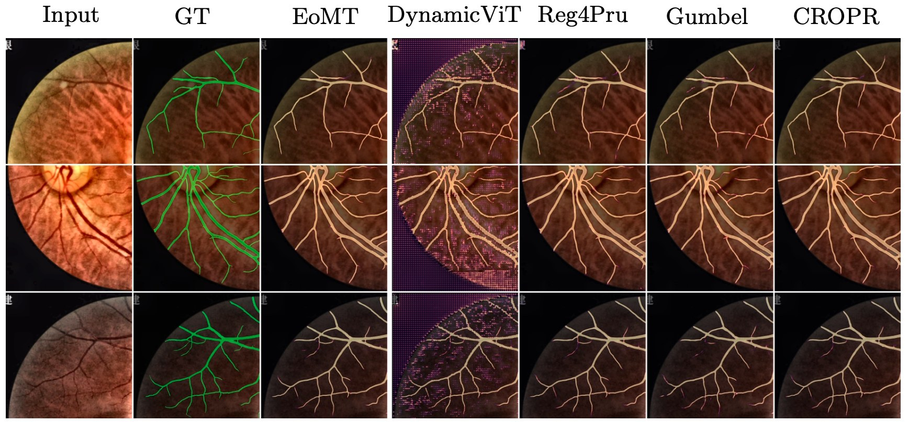
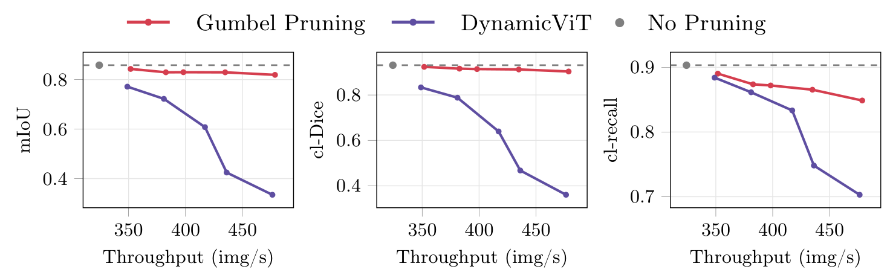
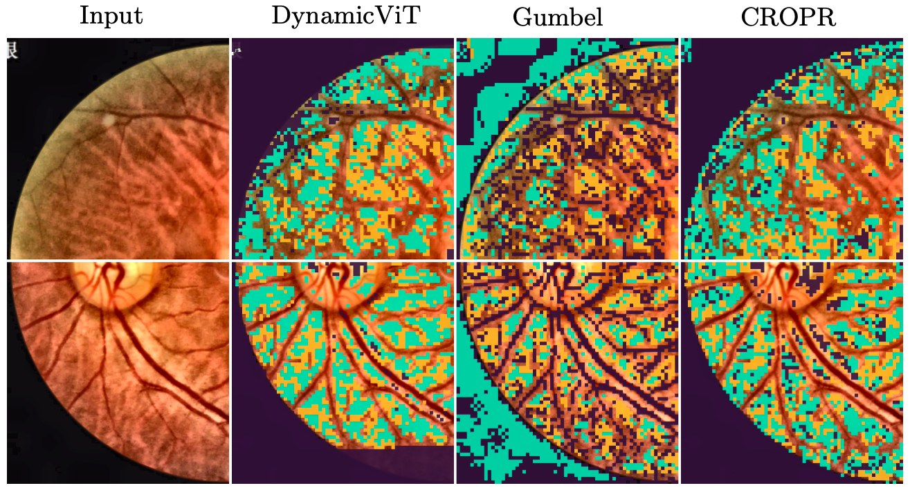
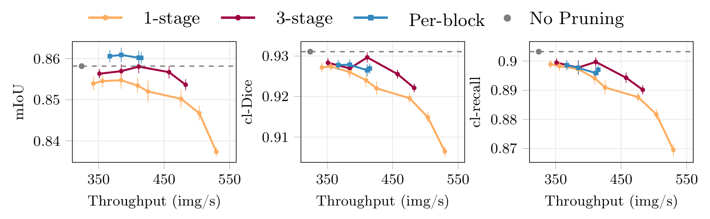

How Do Train-Time Pruning Dynamics and Pruning Schedules Affect Retinal Vessel Segmentation?
Julian Wyatt
Irina Voiculescu
Department of Computer Science, University of Oxford
MICCAI 2026 Workshops: Efficient Medical AI (EMA4MICCAI)
Abstract Vision Transformers (ViTs) have become a prevalent architecture in modern computer vision due to their strong scaling with foundation models and generalisability under self-supervised learning. However, with their strong expressivity comes quadratic computational complexity with respect to the number of tokens. Many methods seek to reduce the total token count to improve efficiency while maintaining quantitative performance for downstream tasks. Although token pruning has demonstrated promising efficiency gains, its application to dense segmentation remains comparatively under-explored due to its additional challenges. Therefore, we propose a controlled empirical study that isolates the challenging design choices over the FIVES retinal blood vessel segmentation dataset. We find that exposing models to any train-time pruning substantially improves segmentation performance relative to soft-masking approaches. At matched throughput, pruning more frequently improves mIoU, while pruning at three selected blocks better preserves centerline and boundary metrics. However, on the 12-block ViT-S, the overhead of per-block pruning limits throughput gains despite further reducing GFLOPs.

Approach
Self-attention compares every pair of tokens, so a ViT’s cost grows quadratically with the number of tokens, and the high-resolution inputs that vessel segmentation needs make this worse. Token pruning removes tokens as they pass through the network, but it is harder to apply to dense segmentation: the decoder must rebuild a dense mask from the kept tokens, hard token removal is non-differentiable, and pruning schedules vary widely across the literature. Rather than proposing a new pruning method, this study isolates two design choices that prior work confounds, and asks:
- How do train-time pruning dynamics affect dense segmentation?
- Which pruning schedule gives the best trade-off between FLOPs and throughput?
- Following from RQ 2, which schedule is best at detecting difficult vessels and has the highest boundary metrics?
Every model shares the Encoder-only Mask Transformer (EoMT) with a DINOv3 ViT-S backbone, adapted to binary segmentation with a single query token. Models are trained on FIVES, 750 fundus images at 2048×2048, each split into four 1024×1024 quadrants and partitioned 70:20:10 into train, validation and test sets. By default, a pruning scorer keeps the top-k patch tokens at the end of blocks 3, 6 and 9 with a 70% keep rate per stage, and the pruned tokens are reinserted before the final block. Segmentation is scored by vessel mIoU, centerline Dice (cl-Dice), boundary IoU (b-IoU) and centerline recall (cl-Recall), and efficiency by GFLOPs per image and forward-pass throughput on one H100 at batch size 8.
RQ 1: Train-Time Pruning Dynamics
Turning soft keep scores into a hard top-k selection is non-differentiable, so methods differ in how a model meets pruning during training. Soft train-time pruning masks pruned tokens out of attention but keeps the full sequence; hard train-time pruning removes them from the sequence in the forward pass. All variants share the EoMT decoder and pruning scaffold:
- DynamicViT: Gumbel-Softmax keep decisions applied as an attention mask (soft), trained with DynamicViT’s budget loss.
- Gumbel Pruning: the same scorer and budget loss, but tokens are removed with a hard top-k during training.
- Reg4Pru: soft masking, regularised by randomly routing tokens from an early block to a late block during training.
- Random (eval-only): the Reg4Pru weights, pruning a random set of tokens at evaluation.
- CROPR: a learnable-query cross-attention scorer on detached features, supervised against the ground-truth mask by an auxiliary head (hard).
| Method | mIoU ↑ | cl-Dice ↑ | b-IoU ↑ | cl-Recall ↑ | GFLOPs ↓ |
|---|---|---|---|---|---|
| EoMT (no pruning) | 0.858 ±.000 | 0.931 ±.000 | 0.835 ±.000 | 0.903 ±.000 | 511 |
| DynamicViT | 0.617 ±.033 | 0.662 ±.064 | 0.415 ±.077 | 0.816 ±.018 | 316 |
| Gumbel Pruning | 0.826 ±.003 | 0.912 ±.002 | 0.796 ±.003 | 0.868 ±.003 | 316 |
| Random (eval-only) | 0.826 ±.001 | 0.914 ±.001 | 0.794 ±.001 | 0.891 ±.001 | 316 |
| Reg4Pru | 0.848 ±.005 | 0.918 ±.006 | 0.813 ±.011 | 0.900 ±.003 | 316 |
| CROPR | 0.858 ±.001 | 0.930 ±.000 | 0.833 ±.001 | 0.900 ±.000 | 313 |
Segmentation after the final block on the FIVES test set, mean ± std over three seeds. All pruned models keep 70% of tokens at each of blocks 3, 6 and 9, with tokens reinserted at the end of the penultimate block.
Models must experience token removal during training. Soft masking regularises token-to-token communication in attention, but never exposes the feed-forward layers that follow to the sparse token sequence used at inference. Across a sweep of keep rates, Gumbel pruning stays close to the dense ceiling while DynamicViT collapses as more tokens are pruned.

Auxiliary supervision also changes which tokens are pruned. DynamicViT’s budget loss gives a graded ranking around the vessels, whereas hard pruning in the forward pass leads Gumbel pruning to a strongly vessel-like selection at the first prune block. CROPR’s directly supervised scores are less consistent in places, such as right of the optic disc, yet CROPR scores highest, which suggests that direct pruning supervision matters more than a smooth score map.

RQ 2 & 3: Pruning Schedules
Pruning schedules in the literature range from a single stage, to a few selected blocks, to every block. Keeping the CROPR setup and varying only the schedule, the study compares: (i) 1-stage, pruning once at block 3 with keep rate ρ; (ii) 3-stage, a geometric schedule (ρ, ρ2, ρ3) at blocks 3, 6 and 9; and (iii) per-block, removing a fixed number of tokens at every block. ρ is swept from 0.2 to 0.9 for 1-stage and from 0.5 to 0.9 for 3-stage, and per-block from 256 to 384 tokens per block.
| Schedule | B1 | B2 | B3 | B4 | B5 | B6 | B7 | B8 | B9 | B10 | B11 | B12 |
|---|---|---|---|---|---|---|---|---|---|---|---|---|
| 1-stage | 4101 | 4101 | 4101 | 1640 | 1640 | 1640 | 1640 | 1640 | 1640 | 1641 | 1641 | 4102 |
| 3-stage | 4101 | 4101 | 4101 | 2872 | 2872 | 2872 | 2008 | 2008 | 2008 | 1409 | 1409 | 4102 |
| Per-block | 4101 | 3752 | 3400 | 3048 | 2696 | 2344 | 1992 | 1640 | 1288 | 937 | 584 | 4102 |
Example total token counts entering each block: 1-stage (ρ = 0.4), 3-stage (ρ = 0.7 per stage) and per-block (~352 tokens removed per block). The query token is inserted before block 10 (the final L = 3 blocks), and pruned tokens are reinserted before block 12.
Pruning more often generally improves segmentation, but every extra pruning stage adds overhead: per-block pruning keeps cutting GFLOPs without a matching gain in throughput on the 12-block ViT-S. Pruning more tokens therefore does not guarantee a faster model, or a better one.

At matched throughput (≈410 img/s), both multi-stage schedules beat 1-stage pruning in mIoU, but the 3-stage schedule beats pruning at every block on boundary IoU and centerline recall. The more aggressive per-block schedule may remove ambiguous thin-vessel tokens, although the margins are small.
| Schedule | mIoU ↑ | cl-Dice ↑ | b-IoU ↑ | cl-Recall ↑ | GFLOPs ↓ |
|---|---|---|---|---|---|
| 1-stage (ρ = 0.6) | 0.853 ±.001 | 0.924 ±.001 | 0.824 ±.001 | 0.894 ±.001 | 333 |
| 3-stage (ρ = 0.7) | 0.858 ±.001 | 0.930 ±.000 | 0.833 ±.001 | 0.900 ±.000 | 313 |
| Per-block (384) | 0.860 ±.001 | 0.926 ±.001 | 0.831 ±.001 | 0.896 ±.001 | 258 |
CROPR setup with only the schedule varied, mean ± std over three seeds. Each ρ is chosen so that throughput is matched at ≈410 img/s.
Conclusion
- Exposure to hard train-time pruning is a critical regulariser for dense prediction: CROPR matches the unpruned EoMT’s mIoU (0.858) with 313 instead of 511 GFLOPs, while soft-masked DynamicViT drops to 0.617.
- At matched throughput, pruning more often improves mIoU, while pruning at three selected blocks better preserves centerline and boundary metrics.
- On the 12-block ViT-S, the overhead of per-block pruning limits throughput gains even as GFLOPs fall.
Code
The code, a Hydra config for every experiment and the result tables behind the paper’s tables and figures are on GitHub. It builds on EoMT, with the token scorer ported from CROPR and the routing module from TREAD.
Citation
@InProceedings{WyaJul_How_MICCAISAT2026,
author = {Wyatt, Julian AND Voiculescu, Irina},
title = {{How Do Train-Time Pruning Dynamics and Pruning Schedules Affect Retinal Vessel Segmentation?}},
booktitle = {Medical Image Computing and Computer Assisted Intervention -- MICCAI 2026 Workshops and Challenges},
year = {2026},
publisher = {Springer Nature Switzerland},
volume = {LNCS 17265},
month = {pending},
page = {pending}
}